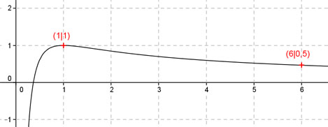
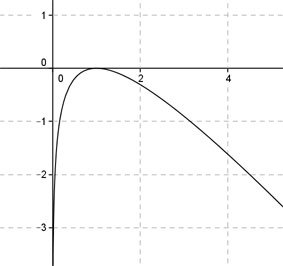

Aufgabe 108 Ergänzen Sie die Wertetabelle für den Graphen: 1 + ln x y = ------------- x x 1 6 y 1 0,5 1 + ln 6 1 + 1,8 2,8 y = f(6) = ---------- = ---------- = ----- = 0,5 gerundet 6 6 6  An welchen Stellen x die Funktion den Wert 1 annimmt, ist elementar nicht zu ermitteln. Abgelesen: Es ist wahrscheinlich nur eine Stelle. Zur Berechnung wendet man ein Näherungs- verfahren an, hier die Regula falsi. f(x) = 1 eingesetzt: 1 + ln x 1 = ----------- |*x x x = 1 + ln x |-x ln x - x + 1 = 0 Als Funktion: y = ln x - x + 1 Die Nullstellen dieser Funktion (y = 0) entsprechen den gesuchten Werten für x.  Abgelesen: Nullstellen zwischen 0,9 und 1,1. Regula falsi: x0 = gesuchte Nullstelle x1 * |y(x2)| + x2 * |y(x1)| x0 = ------------------------------ |y(x1)| + |y(x2)| Nullstelle x0 zwischen 0,9 und 1,1 mit Excel ermittelt: A B C D E F G H I J 0,9 1,1 0,0047 0,0054 0,0042 0,0059 0,0101 0,0101 1,0067 -0,000022 0,9 1,0067 0,0000 0,0054 0,0000 0,0054 0,0054 0,0054 1,0062 -0,000019 0,9 1,0062 0,0000 0,0054 0,0000 0,0054 0,0054 0,0054 1,0059 -0,000017 0,9 1,0059 0,0000 0,0054 0,0000 0,0054 0,0054 0,0054 1,0055 -0,000015 0,9 1,0055 0,0000 0,0054 0,0000 0,0054 0,0054 0,0054 1,0052 -0,000014 0,9 1,0052 0,0000 0,0054 0,0000 0,0054 0,0054 0,0054 1,0050 -0,000012 Erläuterungen zur Tabelle siehe Aufgabe 101. Die gesuchte Nullstelle ergibt sich nach mehreren Näherungen mit ausreichender Genauigkeit zu x1 = 1 gerundet. 1 + ln1 1 + 0 f(1) = --------- = ------- = 1 1 1